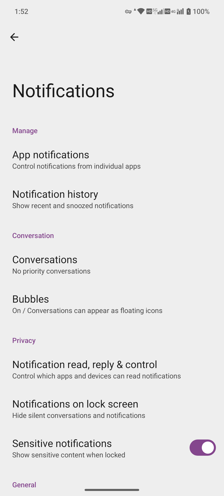
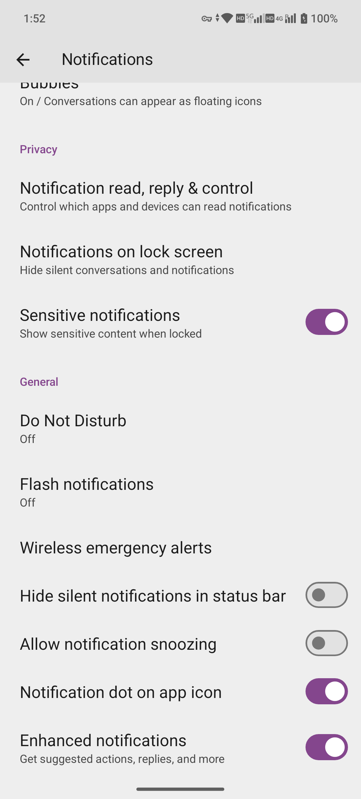
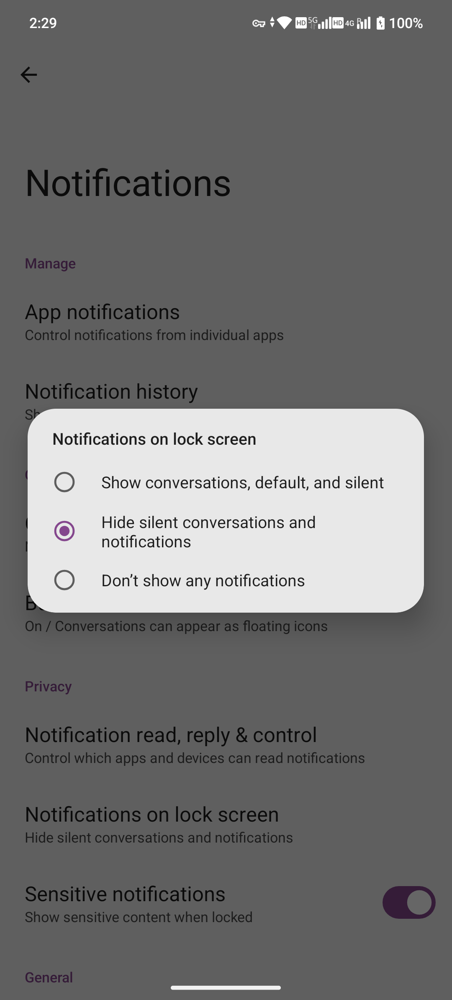
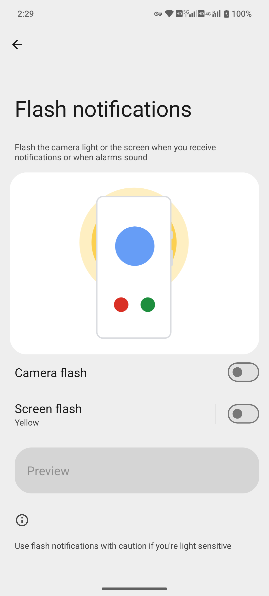

System settings / notifications
App notifications and lock screen privacy
Control which apps and notification channels may alert you, and hide sensitive lock screen content.
Baseline: MA1 · Android 15 · MAG1WW53. Captured: 2026-10-14. This page is an editorial draft. Steps have not been tested except where explicitly stated.
Settings → Notifications
Before you start
- Choose a test app with no personal data
- Testing delivery requires an app or account that can generate a test notification
- Do not capture real Notification history content
Steps
View this session's screenshots and videos ↓
- Open Notifications → App notifications and select the target app.
- Use the displayed switches for the app or individual channels. Some channels are defined by the app; their number and names vary by version.
- Return to Notifications → Notifications on lock screen and choose an appropriate display mode.
- Check Sensitive notifications to control sensitive content. Detailed options still require inspection and review.
- For delayed handling, check Allow notification snoozing. To remove icon dots only, check Notification dot on app icon.
- Use a test notification to check foreground, background and locked-screen behavior. No real notifications were sent or read for this test.
Buttons and options
| Button / option | Purpose and limits |
|---|---|
| App notifications | Manage by app |
| Notification history | Notification history; do not capture personal content |
| Conversations / Bubbles | Conversations and bubbles, depending on app support |
| Sensitive notifications | Sensitive lock screen content |
| Enhanced notifications | Enhanced notification suggestions; read the on-screen privacy notice |
Labels observed on the device
- Manage
- App notifications
- Notification history
- Conversation
- Conversations
- Bubbles
- Privacy
- Notification read, reply & control
- Notifications on lock screen
- Sensitive notifications
- General
- Do Not Disturb
- Flash notifications
- Wireless emergency alerts
- Hide silent notifications in status bar
- Allow notification snoozing
- Notification dot on app icon
- Enhanced notifications
A visible label confirms that an entry or option exists. It does not mean every listed action has been tested.
Expected result and recorded evidence
The test app should show or suppress alerts according to the settings. Notification delivery was not reproduced in this session.
Cancel, exit and restore
Restore permission for the same app or channel. Restore lock screen privacy and notification dots separately.
Troubleshooting
- No alert: check app permission, channel settings, Do Not Disturb and background battery restrictions
- Content still appears on the lock screen: check the app’s notification format and sensitive-content settings
- Disabling a channel has no effect: identify the app and channel actually sending the alert
Limits and versions
Menu entries were verified; notification content and delivery were not.
Peer review: pending. Publication status: unpublished.
Screenshots & videos


White device frame · Original screen capture


White device frame · Original screen capture
The following English screens were captured in this session. Unless otherwise stated, they establish menu and option visibility only. Settings were not changed, and external devices or services have not necessarily passed testing.


MAG1WW53 · 2026-10-14 · Original screenshot


MAG1WW53 · 2026-10-14 · Original screenshot